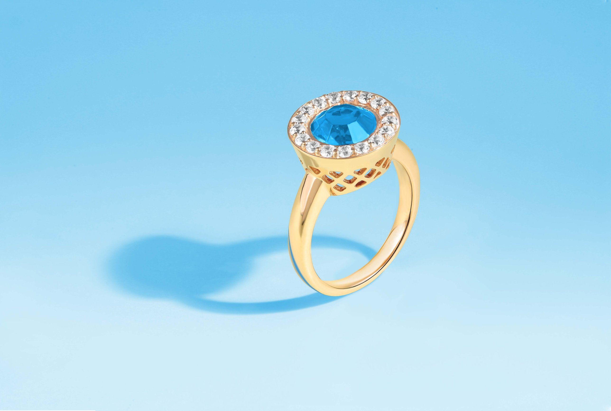

DÉMO DE LA PIÈCE FILIGRANE · MAISON VÉLIN · MARQUE FICTIVE
RETOUR À MAISON VÉLIN
COLLECTION RIVIÈRE
L'éclat se regarde de près.
Vingt-quatre pierres taillées à la main, serties une à une sur un anneau d'or jaune.

À LA LOUPE · BAGUE LAGON
Approchez-vous, comme au comptoir.
Survolez la bague, ou choisissez un détail : la loupe du joaillier vous montre ce que l'œil ne voit pas.

{{detail.num}}
{{detail.title}}
{{detail.text}}
PORTÉ
Des pièces qui se superposent, jamais ne s'imposent.
Chaînes fines, médailles, puces d'oreille : chaque création Sertelle est pensée pour se porter seule ou à plusieurs.
L'ATELIER
Chaque pierre est sertie à la main, griffe après griffe. Il faut une journée pour une alliance.
DÉCOUVRIR L'ATELIEREssayer en salon privé
Une heure avec une joaillière, les pièces de votre choix, et la loupe à portée de main.